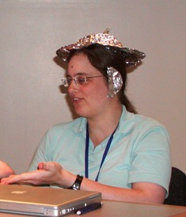
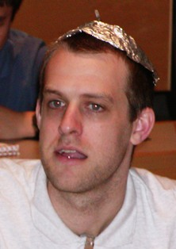
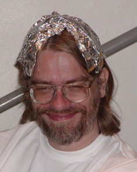
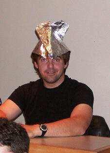
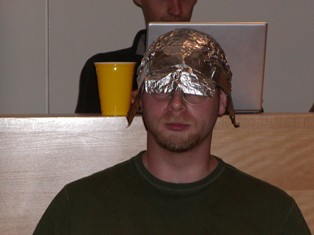
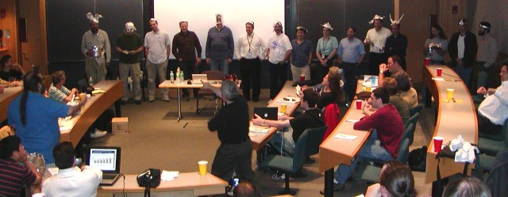
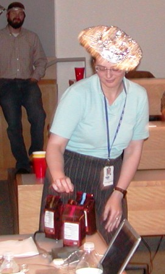
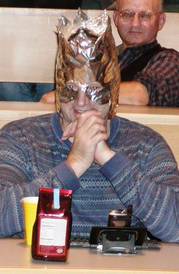
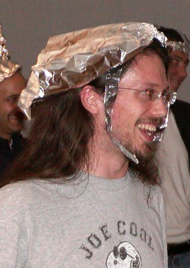
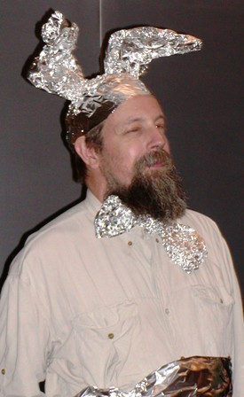

there was a massive turnout tonight for damian's talks. i counted 77 mongers and guests and only about 45-50 sent in rsvps! the rest of you should be very ashamed of yourselves as we did sorta run out of pizza! 18 pies was the order for an estimated 50+. so you who didn't rsvp and ate pizza stole it from the starving mouths of those who showed up a bit late and did rsvp! next time, do the right thing and rsvp so we order the right amount. now on to more nice things. :)
thanx to the primary sponsors, greg london and richard morse. with their donations and hat passing we collected about $370 and our pizza expense was about $280 so the rest will go to tpf.
thanx to those who brought drinks, paper goods and foil. and to those who helped set up the pizza tables. and to that solo guy who was cleaning up while damian started his second talk.
thanx to those silly foil hat contestants. we will have to put some of those pix on our wiki. some of the foil hats were very cute and functional! some of you should go become milleners (see danny kaye in secret life of walter mitty for a great song about that). and the casualty rate was very low for a damian talk so the hat protection factors were high.
thanx to Best Friends Cocoa (hey, i gotta plug the wife's biz! { Editor's Note - Shouldn't that have TM and SM all over it? wdr }) for donating the prizes for the hat contest. get some for the fall/winter weather. makes a great ice breaker at naughty parties! { New Editor's Note - BFC website is still up in 2013 but business closed in 2012. wdr })
thanx to all the attendees for laughing constantly throughout the talks. most of you couldn't help it so that is understandable. :)
thanx to damian for always giving us a talk when he is in town and for tonight's mind melting and patented CXAP. now that most of you have seen it, his pun on google's name is amazing to me in that no one has ever (to my knowledge) made it before.
thanx to bill ricker for helping damian setup and for driving him home after damian drove us nutso.
all in all a very fun and successful evening. hopefully many of you will come to other boston perl monger meetings where we don't have such famous speakers and just talk perl stuff. we do have some very interesting talks so come on down!
thanx,
uri
Uri proposed a Aluminum Hat contest during intermission. Uri's Proposal was for 3 categories for scoring, with four prizes.
Several rolls of Aluminium Foil, or Aluminum as these yanks say, were distributed during the first talk.
|  |  |  |
| She who fixed | Jerrad with Beenie | Ken |
| Damian's Mouse, | with propeller! | |
| with matching ear guards | ||
|  |  | |
| Aerodynamic Greg | Tiara by his Daughter | Honorable Mention |
| Our #1 Pizza Sponsor | but poor protection | for Protection |
| - foil sun visors! |
And during intermission, those willing to be judged were paraded at the front of the room for Damian (foreground right) to judge, with Uri's able interference.

Damian declined to score each entry three ways numerically, and instead awarded the four prizes (4 different flavors of <flash> Best Friends Cocoa <flash/>) intuitively, one for each of the above and one for Judge's Choice or Most Imaginative.
|  |  |
| Most Stylish | Most Protection |
| full cheek guards! | |
| all around coverage! | |
|  |  |
| Most Aerodynamic | Most Imaginative |
| Harvey the imaginary | |
| invisible rabbit |
Chris taped "Damian_talk_-_tinfoil_hat_contest.mov" "Foil Hats - The Video", complete with Best Friends Cocoa presentation to the winners, but it's no longer on-line. If you have a copy, please let us know.
If you've ever wondered where Aluminum "Tin" Foil comes from, you can watch it be made. http://www.boingboing.net/2006/09/26/how_aluminum_foil_is.html